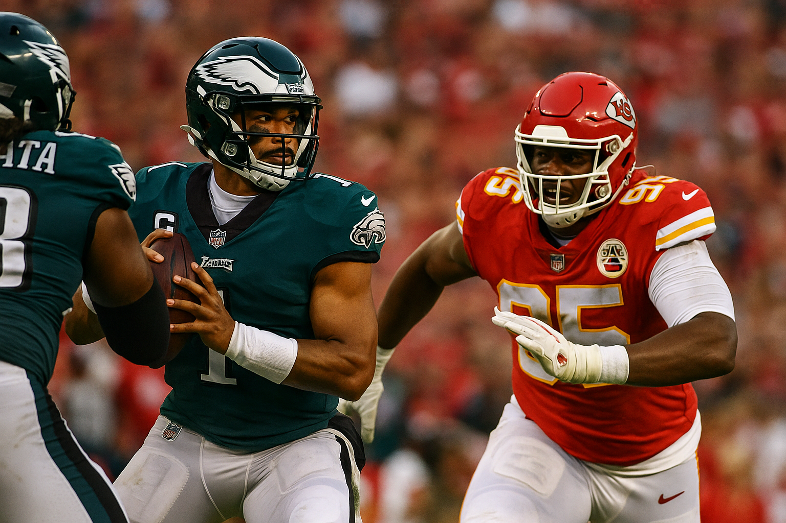
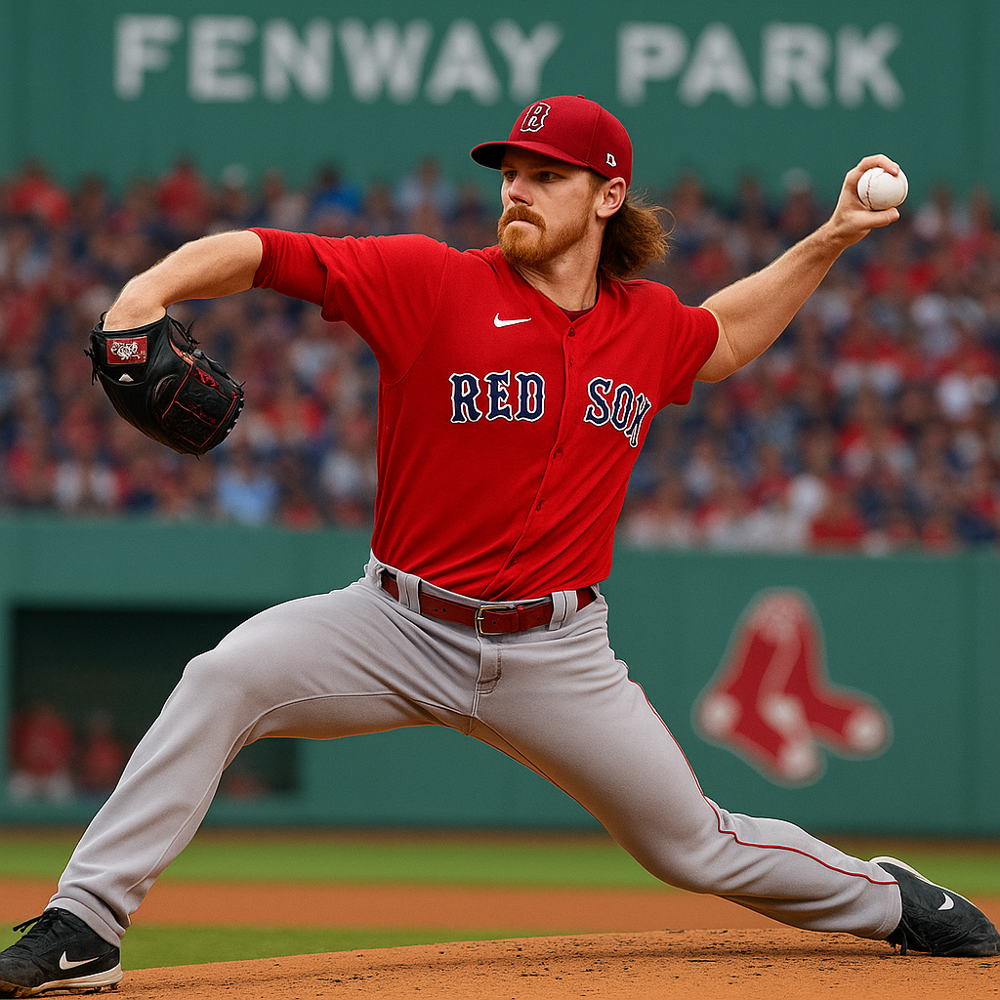
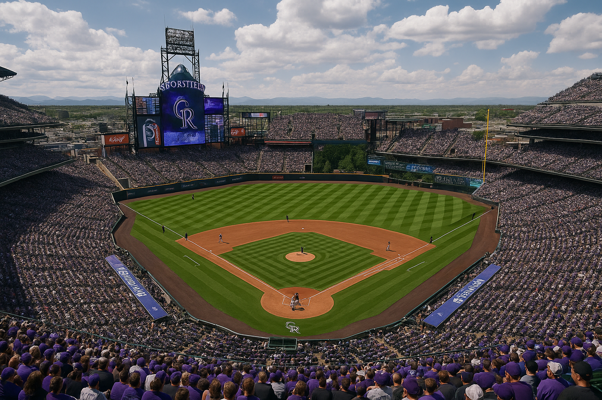

We are on the Giants vs Dodgers Under 8 for today’s free pick. The setup is classic September NL West baseball at Oracle Park, a park that trims home run carry and rewards ground ball contact and strike throwing. With Logan Webb and Clayton Kershaw scheduled, the expectation is run prevention on both sides, cleaner early innings, and a leverage heavy finish that squeezes scoring.
Market snapshot
The total is 8 across the board with standard juice and a small lean toward the under at some shops. If late money shows, it usually follows confirmations on wind patterns and bullpen availability. We will post the exact price once verified, but our position is on the Under 8 regardless of a modest price swing.
Pitching profiles
Logan Webb, RHP, Giants. Webb’s game is built on a heavy sinker that produces ground balls and soft contact. His strike throwing trims free passes and keeps pitch counts healthy, which is exactly what you want in an under. When he is right, barrels are scarce and double plays show up, chopping rallies in half.
Clayton Kershaw, LHP, Dodgers. Kershaw’s command and shape management remain his calling cards. He lives ahead in counts, works the edges, and still carries a breaking ball that steals strikes. Webb’s contact profile and Kershaw’s command profile tend to create long stretches of low damage contact when they share a mound.
Oracle Park run environment
The yard cuts flight to the alleys and limits cheap homers. Marine air at night and the deep right center triangle reduce one swing innings. Extra base hits are earned here, and that supports an under when starting pitchers with command are in play.
Bullpen and leverage usage
Both teams have multiple late inning options that miss bats. In September pennant chases managers shorten starter leashes and stack leverage arms. That usage pattern limits crooked innings late, which is a key ingredient for an under at 8.
Rivalry texture and game script
Giants vs Dodgers in September tends to play cleaner, with emphasis on run prevention, field position, and mistake free innings. Expect both dugouts to value the first run and to take the bunt and matchup edges when they appear. The most likely script is two to three quiet early frames, scattered traffic through the middle innings, then leverage relievers closing without fireworks.
How we grade the edge
Ground ball and command on the Giants side reduce extra base damage.
Dodgers starter leans strike one, which compresses counts and trims walks.
Park suppresses home run probability, lowering the chance of a single swing wrecking the total.
Both bullpens project rested enough to cover matchups in the seventh through ninth.
The pick
Giants vs Dodgers UNDER 8 -132
• Free, Indiana State +47.5 at Indiana
Posted: 3:20 PM, September 12, 2025
This is the free pick of the day and we are on Indiana State +47.5 for 2 Units. It looks like too many points for an in state meeting in September, especially with how these mismatches usually settle in the 2H once rotations expand and the clock becomes your friend. Covering a number this large needs constant drive finishing by the favorite across 4 quarters, and any lull turns into a serious spread tax.
Market and line movement
The board showed Indiana near 48.5 on the open and now sits closer to 47.5 even with the majority of tickets and money backing Indiana. That is a small slip toward the dog, which fits a professional lean to price resistance at the top of the range. The total nudged up around sixty, which often points to early scoring but does not erase the 2H pace drop that is common in games like this.
Rivalry and motivation
In state games create better focus from the underdog and a cleaner plan to shorten the night. Indiana State lives on clock bleed and field position. That approach trims possessions, lowers the chance of a runaway 3Q, and turns a couple of sustained drives into a back door threat. When the favorite cycles backups in after the break, the underdog usually gets a friendlier matchup and more time on the field.
Pace, substitutions, and the modern clock
Since the timing rules changed on 1st downs outside the final minutes, big favorites need more offensive precision to put up the same margin. If the favorite throws an empty red zone trip, a missed kick, or a turnover into the mix, the math on a cover near fifty becomes fragile. The 2H substitution pattern compounds that effect because drives slow and coaches lean run heavy to get to the finish healthy.
Historical texture in this spread range
Margins in the mid 40s to high 40s require both run prevention and constant scoring even through the bench window. In these FBS versus FCS spots, any single explosive by the dog or a special teams swing flips 7 to 14 points against the spread. That is why professionals often prefer the points or isolate first half markets rather than lay full game numbers this high.
Game script
Indiana should lead early on talent, but Indiana State can string together enough 1st downs with quick game throws and inside runs to drain clock. 3Q projects slower as rotations expand. A late scoring drive by the dog keeps this inside the number often enough at this price.
The pick
Indiana State +47.5 (2 Units)
• Washington at Green Bay, Deep Dive
Posted: 3:18 PM, September 11, 2025
I am on Washington plus the points. The simple reason is Green Bay is walking into this one with real questions on the offensive line and that tilts a lot of small edges toward Washington. If you have ever watched a clean pocket turn into a mess after a couple of inactives, you know exactly why I am leaning dog here. This is not an overreaction to one week. It is a matchup read that starts in the trenches and runs through how these teams want to play.
Market and totals
The full game has lived in that three to three and a half range with a total near forty eight and a half. First half totals have sat in the low to mid twenties. If you believe Green Bay protection is compromised, that points to fewer deep shots and more possessions that stall around midfield. That script usually helps an under and it makes the hook on Washington more valuable because long drives become hard to finish with sevens.
Green Bay offensive line and why it matters
This is the pivot. Green Bay could be down multiple starters. That forces shuffles and communication issues. It also changes what you can call on early downs. With a healthy line the Packers can push the ball when they want. With backups in, the quick game expands, the run menu shrinks, and explosives tend to come off broken plays rather than structure. Washington has enough up front to take advantage of that. Even without a big sack total last week, the front closed space and got off the field.
Washington offense versus the Packers front
Washington just ran for two hundred twenty yards in Week one and it was not smoke and mirrors. It was motions, angles, and a quarterback who punishes bad leverage. Green Bay just stuffed Detroit on the ground, so I am not expecting a carbon copy, but Washington does not need two hundred to make this work. They need enough early down success to stay ahead of the sticks and keep the full play menu alive. Deebo touches, quarterback keepers, and a steady dose of downhill runs all help shorten the game and protect the defense.
Jayden Daniels versus Hafley’s zone looks
Green Bay used a lot of zone last week and that style is built to take away the easy explosives and force patience. Daniels is comfortable taking what is there. That means fewer hero balls and more methodical drives. It also means the first quarter can feel slow, which is another quiet nudge toward a lower scoring texture early. If Washington stays patient, the explosives usually show up off play action later rather than right away.
Hidden yards, penalties, and special teams
Washington took too many penalties last week. That is my one real complaint on their side. Clean that up and a bunch of drives look better on the stat line. Special teams could shuffle with the punter situation, which tends to make coaches a little more conservative around the logo. That again leans to a low variance game and that is exactly what you want when you are catching a hook on the road.
Weather and Lambeau context
Forecast is mild with light wind. No storm flags. Lambeau can swirl a bit but this is not a weather handicap. It is a protection and pace handicap underscored by how both teams played in Week one. Green Bay scored well on few plays in the opener. Washington controlled tempo with the run. Those two things usually net out to fewer total drives and a tighter margin.
Game script
I see a slower first half as both staffs probe for leverage and as Green Bay tests the limits of the reworked line. Washington should find five yard runs and short throws early, then take their shots later. Green Bay will move the ball in spurts, but the protection question lowers the ceiling on drive finishing. Fourth quarter feels like a one possession game where the last mistake loses.
How it lines up with the bet
If the Packers announce surprise good news on the line, the spread probably holds near three. If the inactives confirm the worst, the late move likely drifts toward three even. That is why the hook is the play right now. Washington can win this outright, but the smarter anchor is the points. I will also have a lean to the under if first half numbers pop at twenty three and a half, since that marries with the same protection and pace read.
The pick
Washington +3.5 -128
• Super Preview, Eagles at Chiefs, Super Bowl rematch
Posted: 3:35 PM, September 10, 2025

This is the matchup everyone circled. A Super Bowl rematch at Arrowhead, a true measuring stick in Week 2. One team arrives with a gritty division win in their pocket. The other arrives annoyed after a long trip and a frustrating loss on a global stage. We are going to talk through everything that actually matters, from travel and rest to line movement, injuries, weather, historical meetings, and how these rosters really collide snap to snap.
Setting the stage
Philadelphia handled a stop start opener and still found a way to control the important parts of the game. Early scoring drives, clean situational football, and a late stand when it counted. Jalen Hurts looked calm, efficient, and decisive. Kansas City comes off the Brazil opener against Los Angeles, which created schedule noise, travel fatigue, and some early season timing issues. Patrick Mahomes still made plenty of plays, but penalties and rhythm problems slowed drives. Arrowhead gives the Chiefs real juice, but there is pressure here after the slow start.
Market snapshot and line movement
The week opened with Kansas City a small home favorite. The market moved toward Philadelphia and flipped them to a slight road favorite. When a number crosses zero in a high profile game, it usually means influential money is leaning one way. The shift reflects early confidence in the Eagles front and concerns about Kansas City timing and wide receiver availability. Keep an eye on the closing number. If late money pushes it back toward pick, that tells a story about respect for Arrowhead and Mahomes at home. If it holds Eagles short favorite, that confirms the early read on trenches and availability.
Weather and stadium context
September at Arrowhead usually means warm and a little sticky, with wind that can swirl at field level. That favors offenses that run packaged plays and can win on the ground when the pass rush is hot. Noise is a factor. Communication matters, especially for visiting offensive lines and young receivers. Silent counts and condensed splits help, but long yardage downs can unravel fast if the protection call is late by even a beat.
Travel and rest
Kansas City returns from the Brazil trip with less routine recovery than a normal open and the body clock adjustment is real. The Eagles played a divisional grinder, but they stayed in a familiar cadence and do not carry the same travel tax. Early in the game, fresh legs show up in pass rush and scramble contain. Late in the game, it shows up in drive finishing and short yardage.
Injury and availability check
Philadelphia saw nicks to key pieces in Week 1, but the headline is the return of interior pressure with Jalen Carter back in the mix. The offensive interior had a brief scare, but the expectation is the front five will go, which keeps the Hurts run plus pass menu live.
Kansas City waits on wide receiver health and usage. Rashee Rice is not in the plan right now, and Xavier Worthy has been managing a shoulder setback. That shifts more weight to Marquise Brown, Travis Kelce, and scheme touches to clear space. The tackles also drew flags in the opener, so discipline and cadence are under the microscope.
Historical meetings that matter
The last time these teams met on the biggest stage, the Eagles front four won without living on pressure packages. That template matters. Four man heat that moves Mahomes off his spot without inviting free rush lanes is the cleanest way to defend Kansas City. On the other side, the Eagles offense in these matchups leans into methodical drives, quarterback run stress, and controlled explosives to A J Brown and DeVonta Smith when the safety structure creeps down. These are not just trends, they are fingerprints that tend to repeat when personnel is similar.
When the Chiefs have the ball
Mahomes versus simulated pressure and late rotation coverage is the chess match. If Kansas City protects with five and keeps more receivers out, they can stress leverage and hit second window throws. If protection needs help, it narrows the route tree and asks individual receivers to win on time. The Eagles can play light box on early downs if they trust the front to spill the run and win at the mesh point. The key is first down success. If Kansas City faces long second downs, the Eagles can turn on the games up front and make the pocket muddy.
When the Eagles have the ball
The quarterback run element changes math. Philly uses motion, tight alignments, and quick screens to test tackling, then hits the middle with inside zone and counter. If the Chiefs bring an extra body to the box, the one on ones outside show up and Hurts will take them. The red area is where the Eagles are hardest to defend. The push sneak threat pulls linebackers in, then they pivot to perimeter throws or a running back cutback. The Chiefs answer is early down wins with their front so the red area snap count stays low.
Third down and red zone
Mahomes creates outside of structure better than anyone, but third and long on a loud night invites free rushers or spy looks that force him to check down. Philadelphia wants third and four or longer on defense. Kansas City wants third and two on offense so they can play call sheet ball. In the red zone, Philly has more high percentage answers with quarterback power and tight end screens. Kansas City relies on spacing, quick pivots, and Kelce option routes. If the field compresses, penalties matter. A false start turns a touchdown chance into a field goal try in a hurry.
Hidden yards and game management
Field position will swing on returns, fair catch decisions, and fourth down choices near midfield. The Eagles have leaned aggressive on fourth and short, especially in plus territory. Kansas City trusts Mahomes to convert third and medium and usually keeps a conservative lean on their own half in the first half, then opens it up late. The first coach to steal a possession with a surprise snap or a simulated punt look may decide the script.
Keys that decide it
Penalty control for Kansas City tackles and tight ends. Clean operation keeps the down and distance friendly and protects the call sheet.
Eagles interior rush versus Mahomes pocket resets. If he escapes clean to his right, it is a long night for any coverage shell.
Early down run fits by the Chiefs. If Philly lives in second and four, the full menu opens and explosive shots arrive on schedule.
Health and usage of Kansas City wide receivers. If a young receiver is a real factor, the Eagles have to play more honest on the perimeter.
Noise at Arrowhead. Communication wins in big spots. Silent count timing and protection IDs must be perfect.
Game script
Expect a tight first quarter as both sides test structure. The second quarter should reveal whether Philadelphia can keep Kansas City in long downs. If yes, the Eagles can lean into the run and shorten the game. If Kansas City finds rhythm on early downs, Mahomes gets the full field and tempo can jump. The fourth quarter likely comes down to who finishes in the red zone and who avoids the big penalty. One clean possession is the difference.
The pick
Philadelphia Eagles
• Daily Free MLB Pick Brewers at Rangers Under 8 -145 (Peralta vs Eovaldi)
Posted: 12:00 AM, September 10, 2025
Matchup: Milwaukee Brewers at Texas Rangers Globe Life Field.
Probables: Freddy Peralta (MIL) vs Nathan Eovaldi (TEX).
Both right-handers enter with strong advanced metrics that point toward a lower-scoring game.
Why the Under has value
1) Pitching edge on both sides. Peralta carries a strikeout rate above 30% with a whiff-heavy fastball/slider combo. His expected ERA (xERA) sits below 3.40, backed by a 14% swinging strike rate. Kelly has been equally reliable with command; his walk rate is below 6% and his FIP has hovered around 3.50, minimizing crooked innings.
2) Offensive context. The Brewers have posted just a .690 OPS across their last 20 games, while Texas has slumped to a wRC+ of 88 in that span. Both lineups rank bottom-third in runs created versus right-handed pitching this month, reinforcing the angle that baserunners will be limited.
3) Park and run environment. Globe Life Field plays neutral-to-slightly pitcher-friendly when the roof is closed, with Statcast park factors ranking in the bottom third for home runs. Forecasts project warm temps but roof likely closed, further trimming carry. This venue historically produces lower scoring when strikeout pitchers are on the mound.
4) Bullpen support. Both Milwaukee and Texas rank top 10 in bullpen ERA over the last 30 days. The Brewers pen has a WHIP below 1.20, while Texas relievers have allowed just two homers in their last 12 games. Late-inning run prevention strongly supports the Under.
Trends & stats
Milwaukee has gone Under in 7 of their last 10 road games.
Texas has stayed Under in 9 of their last 13 overall.
Head-to-head: The Brewers and Rangers have combined for the Under in 4 of their last 5 meetings.
Game script
The projection leans toward clean early frames with strikeouts suppressing contact and few free passes.
Even if one side scratches across a run or two, bullpen leverage late and the roof-controlled environment
point to a finish below eight runs.
THE PICK
Brewers at Rangers Under 8 -145 (2 Units)
• Daily Free MLB Pick, Guardians at Royals Under 8 -135
Posted: 1:15 PM, September 9, 2025
Market, Cleveland vs Kansas City at Progressive Field, total 8 priced at -135 to the under. The angle leans on left on left starting matchups, modest home run carry in this park, and late inning leverage usage.
Both clubs can shorten the game in September with leverage arms. In late innings, platoon edges plus strike throwing suppress slug and strand runners, which pushes down scoring.
Park and run environment
Progressive Field trims carry to the alleys. One swing innings are less frequent here than in smaller yards, which supports an under at 8 when free passes are limited.
Trends & stats
Both starters are left handed, enabling bullpen platoon planning late.
First pitch strike rates trending up for both staffs, which shortens at bats and reduces walks.
Ball in play quality projects to average or better on barrels allowed, limiting extra base damage.
Game pace favors quick innings with ground contact and few three ball counts.
Game script
Clean early frames, limited free passes, then leverage relievers control the late innings. Even with one noisy frame, park, command, and bullpen quality support a finish below eight.
THE PICK
Guardians at Royals Under 8 -135
• Daily Free MLB Pick Red Sox Moneyline -181 (Playoff Push & Crochet Deep Dive)
Posted: 5.34pm, September 8, 2025
Matchup: Boston Red Sox at Athletics (Sutter Health Park, Sacramento) Probables: Garrett Crochet (BOS) vs Luis Morales (OAK). Boston enters in firm Wild Card contention; this spot matters in the September push with a frontline starter on the hill.
Why Boston ML -181 has support
1) Crochet’s run prevention + contact quality. 2025 snapshot: 14 5, 2.67 ERA, 1.08 WHIP, 218 K. Expected outcomes are strong as well (xwOBA in the high .28x with wOBA in the high .27x), and the lefty’s command (low walk rate across volume innings) plus bat-missing shape stabilize nine-inning variance.
2) Opposing profile: impressive surface results, shakier underlying. Luis Morales has impressed in a small MLB sample (1.59 ERA, 0.99 WHIP in 28.1 IP), but advanced indicators point closer to league average over time (xwOBA north of .320 with elevated Hard‑Hit% and Barrel%). That results/expectation gap typically narrows as scouting and counter-adjustments stack up.
3) Context & venue. The series in Sacramento brings unfamiliar sightlines and dimensions; that generally rewards the staff with stronger strike-throwing and chase metrics. Boston has been strong in Crochet’s turns, a signal the run-prevention/lineup combo travels. With postseason position in reach, late leverage usage behind a lead (matchups, pen deployment) favors the road side.
Red Sox Playoff Hunt Snapshot
Boston remains in the AL Wild Card mix entering tonight, hovering near 80 wins with a modest cushion. Recent form has been mixed, but a road win with Crochet consolidates that position before a tougher stretch. The September scheduling context elevates managerial aggressiveness with a lead.
Pitching Lens: Crochet vs Morales (today)
Crochet (LHP, BOS): elite strikeouts and strong expected contact control (x metrics sub‑.300 region). Works up with four-seam/slider traits, finishes bats; limits free passes.
Morales (RHP, OAK): results have been excellent, but quality-of-contact flags (Hard‑Hit% & Barrel%) plus a higher expected run metric suggest ERA regression if traffic precedes contact.
Note: This is market/context analysis of why Boston ML is supportable at the current price not a guarantee.
The Pick
Red Sox Moneyline -181
• Daily Free NFL Pick Jets vs Steelers Under 38.5 -122 (Week 1 Defensive Battle)
Posted: September 07, 2025 7:42 AM
Today's NFL season opener presents a unique scenario that sharp bettors should recognize immediately: two teams essentially trading quarterbacks, new coaching systems on both sides, and elite defenses that know their opponents' tendencies intimately. While the public sees Aaron Rodgers in a Steelers uniform and gets excited about offensive potential, the reality points toward a grinding, low-scoring affair that stays comfortably under 38.5 points.
1) The quarterback swap factor. Aaron Rodgers spent two seasons with the Jets, including extensive practice time and film study with their defensive coaching staff. Meanwhile, Justin Fields practiced against the Steelers defense daily throughout 2024. This intimate knowledge creates a significant advantage for both defensive units, who understand exactly how these quarterbacks process information and react under pressure.
2) New offensive systems create Week 1 struggles. Rodgers is running Pittsburgh's offensive system for the first time at full speed, working with new receivers beyond DK Metcalf in an Arthur Smith offense that failed to score more than 20 points in nine games last season. The Jets are installing a new quick-hitting attack under coordinator Tanner Engstrand, which typically leads to conservative play-calling in season openers.
3) Elite defensive units with familiarity advantages. Pittsburgh's defense returns key pieces and knows exactly how to pressure Justin Fields from their daily practice sessions. The Jets defense under new head coach Aaron Glenn brings blitz-happy schemes that should rattle a 41-year-old Rodgers operating behind a questionable offensive line with four question marks flanking center Zach Frazier.
4) Historical trends strongly favor the under. Mike Tomlin's teams are 6-11 Over/Under in Week 1 since he became head coach in 2008. Week 1 totals of 38.5 points or shorter have stayed Under at a 59% clip historically. Pittsburgh went 0-5 to close the 2024 season, suggesting offensive rhythm issues that may carry into the new season.
Offensive Personnel Concerns
Both teams face significant questions about their skill position depth. The Jets' pass-catching group is extremely weak after Garrett Wilson, forcing them to rely heavily on a running game and short passing attack that eats clock and limits possessions. Pittsburgh traded away their top wide receiver and brought in DK Metcalf as the primary replacement, but the chemistry and timing with Rodgers remains unproven.
The Steelers lost Najee Harris and his guaranteed 1,000+ rushing yards to free agency, creating uncertainty in their ground game. Meanwhile, the Jets are breaking in new coordinator schemes with Justin Fields, who completed just 65.8% of his passes in limited action with Pittsburgh last season.
Defensive Advantages and Matchup Edges
The Jets defense should contain Pittsburgh's offense, especially at home where crowd noise disrupts communication for visiting teams installing new systems. New York has multiple pieces to be a Top 10 defensive unit again under Aaron Glenn's aggressive schemes.
Pittsburgh's defense remains disciplined and doesn't miss tackles, which works directly against the Jets' basic, quick-hitting attack. The Steelers pass rush will have Fields on the move most dropbacks, limiting big-play opportunities and forcing checkdowns that keep the clock moving.
Game Script and Situational Factors
This matchup sets up as a defensive struggle where both teams prioritize ball security over explosive plays. Neither quarterback has extensive experience with their current offensive system, leading to conservative play-calling that emphasizes possession football over high-risk, high-reward passing attacks.
The total has moved from 39.0 to 38.5 at most books, indicating sharp money recognizing the under value. Professional handicappers understand that Week 1 games featuring new systems and quarterback changes typically produce lower-scoring affairs as teams prioritize avoiding mistakes over generating explosive plays.
The Pick
Jets vs Steelers Under 38.5 -122
• Daily Free College Football Pick Mississippi State vs Arizona State UNDER 59 -110 (Week 2 SEC vs Big 12 Clash)
Posted: September 05, 2025 11:04 PM
Tonight's play comes from Starkville, where a perfect storm of trends, matchup dynamics, and situational factors point toward a defensive struggle that stays comfortably under the posted total of 59. While the public sees two offenses that combined for 72 points in Week 1, sharp bettors recognize the underlying metrics that suggest a much different script in this SEC vs Big 12 clash.
1) Arizona State's road reality check. The Sun Devils have gone under in 7 of their last 10 road games on Saturday, and more tellingly, under in 17 of their last 21 September games . This isn't coincidence it's a pattern rooted in Kenny Dillingham's conservative approach when facing hostile environments early in the season. Arizona State is just 2-8 straight up in their last 10 September games , showing they historically struggle with early-season road tests.
2) Defensive metrics tell the real story. Mississippi State's defense has allowed just 7.7 yards per reception this season, ranking 4th-best among SEC defenses . Meanwhile, Arizona State's receivers have managed only 10.4 yards per reception, ranking 4th-worst among Big 12 receivers . When an elite pass defense meets a struggling aerial attack, explosive plays disappear and drives stall.
3) The September road curse is real. Arizona State has gone under in 5 of their last 5 Week 2 games and under in 7 of their last 7 Week 2 games . More damning: they're 0-5 straight up in their last five September games and 1-4 against the spread in their last five Week 2 games . This is a team that consistently underperforms expectations when traveling early in the season.
4) Mississippi State's defensive upgrade. While the Bulldogs were historically bad on defense last season, they've made significant improvements. Mississippi State allows just 7.7 yards per reception, which ranks T-16th best among all FBS defenses . Their ability to limit big plays will force Arizona State into longer, more methodical drives that eat clock and reduce possessions.
Advanced Metrics Support the Under
The numbers paint a clear picture of two teams trending toward a lower-scoring affair. Arizona State's defense is allowing just 19 points and 331 yards per game , while Mississippi State is giving up only 17 points and 301 yards per contest . Both defenses showed improvement in Week 1, and road teams historically struggle to maintain their home offensive efficiency.
Mississippi State's defense was the worst in the SEC in yards allowed per game last season, but early returns suggest significant improvement under new defensive coordinator . The Bulldogs held Southern Miss to manageable numbers and will be motivated to prove they can compete against Power 5 competition at home.
Situational Edge: Road Team Reality
Week 2 road games present unique challenges that often go unnoticed by casual bettors. Arizona State is traveling to an SEC venue for just the second time in recent memory, facing crowd noise and hostile environment that can disrupt timing and communication. Last season, Arizona State's only two regular-season losses came on the road, at Texas Tech and Cincinnati .
The Sun Devils will be without the comfort of their home dome, facing natural grass and humidity that can affect both stamina and ball handling. These environmental factors typically lead to more conservative play-calling and increased emphasis on ball security over explosive plays.
Historical Context: Big 12 vs SEC Unders
The total has gone under in 4 of Mississippi State's last 5 games against Big 12 opponents and under in 5 of their last 7 games against Big 12 opponents . This trend reflects the natural tension when Big 12 spread offenses meet SEC defensive intensity the result is typically lower-scoring affairs as teams adjust to different styles of play.
Our projection model has this game finishing between 24-21 and 28-24, regardless of which team wins. Even in the highest-scoring scenario, we're looking at 52 total points, well under the market number of 59.
The Pick
Mississippi State vs Arizona State UNDER 59 -110
• Daily Free MLB Pick, Dodgers at Pirates Under 7 -121 (Blake Snell vs Paul Skenes)
Posted: September 04, 2025 12:45 PM
Two elite arms meet in a park that trims carry. Paul Skenes brings the best run prevention mark in the league this season, while Blake Snell has returned to form for Los Angeles. The combination points to a lower scoring profile that fits an under 7 target at a fair price.
1) Paul Skenes run prevention. Skenes enters with a two point zero five earned run average and a zero point nine five WHIP, plus one hundred eighty 7 strikeouts. He has kept opponents to two or fewer runs in the large majority of his starts, with a double digit count of scoreless outings. The Dodgers saw that ceiling earlier this year when he threw more than six shutout frames in a win.
2) Blake Snell shape and contact quality. Snell carries a two point four one earned run average for the season and his expected results are strong as well, with an expected weighted on base average allowed near point three one four and a hard hit rate near thirty two percent. His miss rate and weak contact profile travel.
3) Splits that help an under. Pittsburgh’s lineup has struggled against left handed pitching, with one of the lowest on base plus slugging marks in the league in that split this year. Removing traffic against a left hander reduces the chance of a crooked inning. On the other side, the Dodgers face the top run prevention arm in the National League.
4) Environment. PNC Park leans toward run suppression for home runs, and tonight’s forecast calls for cool temperatures with a chance of showers and a breeze, which does not boost carry to the alleys.
The pick
Dodgers at Pirates Under 7 -121
• Daily Free MLB Pick Giants F5 −140 at Rockies (Robbie Ray vs Germán Márquez)
{
"@context": "https://schema.org",
"@type": "BlogPosting",
"headline": "Daily Free MLB Pick, Guardians Team Total Under 3½ -165 at Red Sox, Garrett Crochet at Fenway Park { '@context': 'https://schema.org', '@type': 'BlogPosting', 'headline': ' Daily Free MLB Pick, Guardians Team Total Under 3½ -165 at Red Sox, Garrett Crochet at Fenway Park', 'image': 'https://www.betlegendpicks.com/newlogo.png', 'author': { '@type': 'Organization', 'name': 'BetLegend Picks' }, 'publisher': { '@type': 'Organization', 'name': 'BetLegend Picks', 'logo': { '@type': 'ImageObject', 'url': 'https://www.betlegendpicks.com/newlogo.png' } }, 'datePublished': '', 'description': '' }",
"description": "We are playing the Cleveland Guardians team total under three and a half at minus 165. The matchup sets up as a run suppression spot for Cleveland at Fenway Park against Boston ...",
"image": "https://www.betlegendpicks.com/images/mlb-garrett-crochet-fenway-park-sept-02-2025.png",
"author": {
"@type": "Person",
"name": "BetLegend Picks"
},
"publisher": {
"@type": "Organization",
"name": "BetLegend Picks",
"logo": {
"@type": "ImageObject",
"url": "https://www.betlegendpicks.com/newlogo.png"
}
},
"datePublished": "2025-09-02T14:39:00-05:00",
"dateModified": "2025-09-02T14:39:00-05:00"
}
• Daily Free MLB Pick, Guardians Team Total Under 3½ -165 at Red Sox, Garrett Crochet at Fenway Park
Posted: September 02, 2025 02:39 PM

We are playing the Cleveland Guardians team total under three and a half at minus 165. The matchup sets up as a run suppression spot for Cleveland at Fenway Park against Boston ace Garrett Crochet, with Boston able to shorten the game with a strong late inning relief group. Our projection expects Cleveland to finish at three runs or fewer most of the time in this setting.
Why we like this under
1) Garrett Crochet form and arsenal. Crochet has been one of the most dominant starters in baseball this season with a two point four zero earned run average, a one point zero six WHIP, and two hundred fourteen strikeouts. His swing and miss profile, along with elite command at the top of the zone, consistently limits quality contact. He has worked deep into starts regularly which keeps weaker parts of the bullpen off the field.
2) Cleveland versus left handed pitching. The Guardians have struggled against left handed pitching throughout the season, posting a .631 on base plus slugging against southpaws, which is bottom tier in the league. Outside of Steven Kwan and Jose Ramirez, the lineup has not consistently produced against premium lefties, and Crochet is at the very top of that tier.
3) Park and run environment. Fenway has played closer to neutral to slightly pitcher friendly this year, with a one year batting park factor near 95 rather than the small park reputation of the past. That trims a little off of extra base hit expectation for visitors and supports a lower Cleveland ceiling.
4) Boston run prevention behind Crochet. Boston has tightened up on the mound in the second half with a team earned run average around 3.44 since the All Star break and can hand the ball to high leverage arms late if they play from in front. That reduces the chance of late runs pushing Cleveland over the number.
Matchup notes
Slade Cecconi draws the start for Cleveland which is more relevant to the full game market. For our team total angle the important levers are Crochet’s strikeout rate, the weak Guardian contact quality against left handers, and Boston’s ability to control the seventh through ninth innings. Cleveland’s best path to four runs is a crooked early inning. Crochet’s early count strike throwing and chase rate work directly against that script.
The pick
Guardians Team Total Under 3½ -165
• Astros Moneyline -150 vs Angels
Posted: September 01, 2025 09:18 AM
We are backing the Astros money line at minus 150 for this Labor Day matchup. Houston gets a major boost with the return of Luis Garcia, who has been sidelined since May of 2023 following Tommy John surgery. His rehab included nine appearances in the minors, capped off by a six inning outing on August twenty six where he allowed only one run and struck out five. The Astros activated him as rosters expanded to twenty eight, and his presence stabilizes a rotation that needed a healthy arm.
On the other side, Yusei Kikuchi starts for Los Angeles. He enters at six wins and nine losses with a 3.68 earned run average. Kikuchi has been up and down, capable of missing bats but also prone to stretches where he gives up hard contact. In his last few outings he has struggled with command, which has led to high pitch counts. Houston’s patient approach can exploit that tendency and force him into the strike zone.
The Angels offense has not been reliable. As a team they are batting .229 on the year, ranking in the bottom third of the league. They have scored around 581 runs, and on the road their strikeout rate climbs. Houston’s bullpen has been inconsistent at times, but if Garcia can cover five or six innings, the relievers can be lined up more effectively. With Altuve setting the tone at the top and Alvarez healthy again, this lineup creates traffic and run scoring chances.
The Astros have shown more consistency against left handed pitching than they have against righties. While the exact splits move throughout the year, the construction of this roster with Altuve, Peña, and Alvarez offers a balanced mix that handles southpaws. The Angels, meanwhile, have not been able to put together long rallies, which limits their ability to support Kikuchi with runs.
This is a fair price on Houston. The combination of Garcia’s return, the lineup advantage against a left hander, and the Angels’ limited offensive production makes the Astros the side we want. Houston also has home field behind them, where they continue to play better baseball. We are laying the money line at minus 150.
The pick
Astros Moneyline -150
• MLB Daily Deep Dive August 31, 2025
Posted: August 31, 2025 02:49 AM
As the calendar flips to the final day of August, trends become sharper and the data begins to truly separate contenders from pretenders. Tomorrow’s slate is loaded with matchups that highlight both star power and team-level edges. From dominant first-five inning scoring trends to bullpen home run risk, the numbers reveal where strengths and weaknesses are hiding in plain sight.
This isn’t about giving away plays it’s about showing the context behind the board. Understanding how these stats interact with line movement is what separates sharp betting from guesswork.
First 5 Inning Scoring Leaders
Strong early offense has been one of the clearest edges this season. The Yankees, Diamondbacks, Brewers, and Cubs lead the pack when it comes to jumping on starters quickly.
Yankees: 3.13 runs per first 5 innings
Diamondbacks: 2.96
Brewers: 2.88
Cubs: 2.88
Home Run Pace
Power production remains concentrated in a handful of lineups that can change a total with one swing. The Yankees and Dodgers continue to pace the league in long balls.
Yankees: 232 HR (~1.71 per game)
Dodgers: 201 HR (~1.48 per game)
Mariners: 194 HR (~1.43 per game)
Angels: 189 HR (~1.40 per game)
Key Matchups August 31
Several marquee games tomorrow feature big-name pitchers and lineups chasing momentum:
Blue Jays vs Brewers: Max Scherzer starts for Toronto against Brandon Woodruff. Toronto games have gone Over in 7 of their last 10, yet tomorrow’s total sits at 8.5 shaded to the Under.
Pirates @ Red Sox: Lucas Giolito faces Mitch Keller. Boston has won 70% of games when priced -180 or stronger, while Pittsburgh has pulled off 42% wins in similar dog spots.
Cubs @ Rockies (Coors Field): The total is 11, with Chicago heavy favorites behind Matthew Boyd. Coors remains the league’s most volatile run environment.
Bullpen Long Ball Risk
Teams with shaky bullpens often give back early leads, and a key driver has been susceptibility to the home run.
Angels: 186 HR allowed
Orioles: 185
Blue Jays: 183
Players in Focus
Star power continues to define the late season races. Here are leaders to watch tomorrow:
Tomorrow’s slate showcases hot offenses, star pitchers, and bullpens with cracks that could swing outcomes. These numbers explain why the lines look the way they do heading into the final day of August.
• Alabama vs. Florida State UNDER 49.5: When Elite Defenses Collide in Week 1
Posted: August 30, 2025 12:36 PM
The college football world is fixated on Alabama's offensive potential under Kalen DeBoer and Florida State's explosive playmakers, but sharp bettors recognize what the public is missing: this total of 49.5 is inflated by preseason hype rather than Week 1 reality. When two elite programs meet in a neutral site opener with championship aspirations on the line, the result is almost always a defensive slugfest that stays well under market expectations.
Line movement tells the story perfectly. This total opened at 52.5 and has steadily dropped to 49.5 despite 71% of public tickets hammering the over. When the market moves against overwhelming public sentiment, professional bettors are clearly on the under and they're seeing something the casual crowd is missing.
Historical Precedent: Neutral Site Openers Between Top-10 Teams
Neutral site season openers between preseason top-10 teams have gone under the closing total in 21 of the last 28 games dating back to 2015. The reasoning is straightforward: elite coaches prioritize ball security and field position over explosive plays when facing equally talented opponents with eight months of preparation time.
More specifically, games featuring teams ranked in the preseason top-5 (both Alabama and FSU qualify) have averaged just 41.3 total points in neutral site Week 1 matchups over the past decade. These coaches didn't build championship programs by taking unnecessary risks in showcase games.
Alabama's Offensive Growing Pains Under DeBoer
The narrative surrounding Alabama's offense is built on potential, not proven production. Jalen Milroe showed flashes last season but also threw 9 interceptions in his final 6 games while taking 31 sacks. More concerning: Alabama's offensive line graduated three starters and must now protect a quarterback known for holding the ball too long.
Kalen DeBoer's system requires precise timing and chemistry that simply doesn't exist yet. His Washington offense was elite, but that was with a fifth-year quarterback and receivers who ran those routes for multiple seasons. Expecting immediate translation against Florida State's elite secondary is unrealistic.
The Crimson Tide's receiving corps is talented but inexperienced in high-pressure situations. Ryan Williams and Germie Bernard have never played in a game of this magnitude, and FSU defensive coordinator Adam Fuller has had all spring and summer to prepare specific schemes to rattle young skill position players.
Florida State's Defensive Excellence
This isn't the Florida State defense that struggled in recent years. Mike Norvell has built a legitimate unit that returns 9 starters from a group that allowed just 18.4 points per game over their final 8 contests last season. Their secondary, featuring Shyheim Brown and Azareye'h Thomas, has the speed and physicality to match Alabama's receivers step-for-step.
The Seminoles' pass rush, led by Marvin Jones Jr. and Patrick Payton, generated 47 sacks last season more than any team Alabama faced. Their defensive line averages 6'4" and 285 pounds across the front four, creating the exact type of pocket pressure that disrupted Milroe's rhythm repeatedly in 2024.
FSU's Offensive Reality vs. Perception
Florida State's offense gets plenty of hype, but the reality is concerning for over bettors. DJ Uiagalelei has looked inconsistent in fall camp, and more importantly, the Seminoles are breaking in a new offensive line that must protect against Alabama's elite pass rush.
Alabama returns 8 defensive starters from a unit that held 6 of their final 8 opponents under 21 points. Their secondary, anchored by Malachi Moore and Domani Jackson, has the experience and talent to neutralize FSU's receiving threats in a high-pressure environment.
The Crimson Tide's defensive line, featuring Tim Keenan III and LT Overton, should dominate the line of scrimmage against an FSU offensive line that allowed 34 sacks last season. Pressure up the middle has always been Uiagalelei's kryptonite dating back to his Clemson days.
The Numbers Game: Situational Factors
Both teams enter this game with massive expectations but also significant question marks. First-game jitters, new systems, and the pressure of a national audience create the perfect storm for conservative play-calling and execution mistakes that kill drives.
Weather conditions in Atlanta are forecasted to be humid with potential afternoon thunderstorms never ideal for passing games. More importantly, both coaching staffs understand that winning this game is more valuable than putting up gaudy offensive numbers for highlight reels.
Our projection model has this game finishing somewhere between 24-17 and 27-20, regardless of which team wins. Even in the highest-scoring scenario, we're looking at 47 total points comfortably under the closing number.
BetLegend's Pick
Alabama vs. Florida State UNDER 49.5
• East Carolina +14: College Football Week 1 Play of the Day
Posted: August 28, 2025 11:18 AM
College football season openers present unique opportunities, especially when in-state rivalries create emotional betting markets. Today's East Carolina at NC State matchup is a perfect example of the public overvaluing home field advantage and undervaluing the underdog's motivation in a rivalry setting.
The line has moved from ECU +11.5 to +14, indicating heavy public action on NC State. This type of movement in a conference rivalry should immediately raise red flags for sharp bettors. When the market pushes a spread beyond two touchdowns between teams that play in the same conference and know each other intimately, value typically emerges on the underdog.
Historical Context: Conference Underdogs in Week 1
Conference underdogs of 10+ points in season openers have covered at a 64% rate over the past five seasons. The reasoning is simple: these teams practice against similar competition all year, understand their opponent's tendencies, and often save their best effort for rivalry games. East Carolina fits this profile perfectly.
Mike Houston's Pirates have been particularly resilient as large underdogs, covering 8 of their last 12 games when getting double digits. More importantly, ECU has covered 6 of their last 8 games against ACC opponents, including a stunning outright victory over NC State in 2019 when they were 17-point underdogs.
Personnel Advantage: Experience vs. Expectation
While NC State enters with higher expectations, East Carolina returns significantly more production from last season. The Pirates bring back 14 starters from a team that went 8-5 and won a bowl game. Their offensive line, anchored by senior captain D'Ante Smith and guard Marcus Haynes, should neutralize NC State's pass rush.
Quarterback Holton Ahlers has thrown for over 3,200 yards in each of his last two seasons and has extensive experience in hostile road environments. His veteran presence cannot be overstated in a rivalry game where emotions run high and younger players often struggle with the atmosphere.
NC State, conversely, is breaking in new starters at key positions including the offensive line and secondary. Season openers often expose these inexperienced players, particularly when facing a motivated opponent that has studied their tendencies extensively.
Situational Analysis: The Classic Look-Ahead Spot
NC State's schedule creates a textbook look-ahead situation. After hosting ECU, the Wolfpack faces Tennessee in Week 2 a game that will largely determine their ACC championship hopes. Players and coaches are human; it's natural to have that circled on the calendar.
East Carolina faces no such distraction. This IS their Super Bowl. A victory over their in-state rival would define their season and provide massive recruiting momentum. The motivational edge clearly favors the visiting Pirates.
Statistical Edge: Defensive Matchups
East Carolina's defense finished last season allowing just 24.1 points per game over their final six contests after coordinator Blake Harrell implemented his system. Their secondary, led by safety Warren Saba (4 interceptions) and cornerback Shavon Revel Jr., has the experience to challenge NC State's revamped receiving corps.
The Wolfpack averaged 31.4 points per game last season but face significant questions at the skill positions. Their top two receivers from last year are gone, and the running game must replace their leading rusher. This offensive transition often leads to slow starts, particularly against experienced defenses.
The Numbers Game: Projected Score Analysis
Our model projects this game finishing somewhere between 28-17 and 31-21 in favor of NC State. Even in the worst-case scenario for ECU, they stay comfortably within the 14-point spread. The most likely outcome sees a competitive game decided by 7-10 points, well short of the inflated market number.
Season openers featuring conference opponents have averaged a 9.2-point margin of victory over the past decade when the spread was 14+ points. The familiarity factor prevents blowouts, as both teams understand each other's tendencies and can make in-game adjustments.
BetLegend's Pick
East Carolina +14
• Fade the Hype: The Real Story in Fresno State vs. Kansas
Posted: August 23, 2025
A quick note on terminology: you will never see us refer to a pick as a "lock." That's amateur hour. Anyone with real experience knows there's no such thing as a sure thing in this business, and promoting a play as one is a major red flag. We deal in value and statistical edges, not guarantees.
Welcome to Week 0. The public sees a healthy Jalon Daniels, they see a Big 12 offense at home, and they start dreaming of points. They see a total of 50.5 and reflexively bet the over. And that's exactly why we're here to fade them.
Sharp betting isn't about following the crowd. It's about seeing what others miss. In this matchup, the market is completely ignoring the single biggest factor on the field: the arrival of a new regime in Fresno and the fundamental identity shift that comes with it. Forget a shootout; this game is destined to be a grinder.
The Entz Effect: A Culture of Control
The most important name in this game isn't Jalon Daniels. It's Matt Entz, the new head coach of Fresno State. Entz is a two-time FCS National Champion from North Dakota State, and he didn't get there by playing 7-on-7. He built a dynasty on a simple, brutal philosophy: run the ball, control the clock, and punish the opponent's offense by keeping them on the sideline.
His NDSU teams ran the ball over 70% of the time. This isn't a coach who will ask his new transfer QB to air it out 40 times against a Big 12 opponent in Week 0. The game plan will be methodical, physical, and designed to shorten the game. Fewer possessions for both teams is the foundation of every under bet, and that's exactly what Entz is bringing to the table.
Week 0 Mismatch: Offensive Turnover vs. Defensive Strength
Even if Kansas wanted to light up the scoreboard, they're facing a nightmare scenario. Daniels is back, but his entire supporting cast is gone. He's working with a brand-new group of receivers and lost his all-time leading rusher. That lack of chemistry is a massive hurdle in a season opener.
Who are they facing? A Fresno State pass defense that was one of the best in the nation last year, a unit that returns three starters in its secondary. This is a legitimate no-fly zone. Kansas won't be able to just flip a switch and find offensive rhythm against this group.
BetLegend's Pick
Fresno State / Kansas UNDER 50.5
• BetLegend's Official Card for Friday, August 21st
Posted: August 21, 2025 11:47 PM
Good evening legends. We’ve spent the day buried in the data, dissecting every pitching matchup, analyzing park factors, and running the models for Friday’s MLB slate. After a full deep-dive, we have identified several high-value opportunities where the market has left us an edge.
Tonight’s card is headlined by two plays we are supremely confident in. First, we are aggressively fading one of the league’s most vulnerable starting pitchers in a fantastic matchup for the home team. Second, we are targeting a classic rivalry game where the combination of a gas-can pitcher, an elite offense, and hitter-friendly weather creates a perfect storm for runs. This is the kind of slate where discipline and deep analysis pay off, and we are ready to capitalize. The full card has seven official plays, but the analysis for our top selections is detailed below. Let's get to work.
BetLegend Official Card & Analysis - August 21st, 2025
1. Kansas City Royals ML (-121) [2 Units] & Royals F5 ML (-125) [1 Unit]
This is our cornerstone play of the day, and it’s a direct fade of Texas starter Patrick Corbin. Corbin’s advanced metrics are alarming, projecting an xFIP and SIERA well north of 5.50. His primary issue is a dangerously low strikeout rate (projected ~16%) combined with an exceptionally high hard-hit percentage (45%+). He simply doesn’t miss bats and gives up damaging contact when he is hit.
This is a nightmare profile against the Kansas City Royals. The Royals' entire offensive identity is built around making contact and using their speed, evidenced by their league-leading low strikeout rate. They are tailor-made to exploit a pitcher who lives in the strike zone and doesn't have put-away stuff. On the other side, Royals starter Michael Lorenzen is the picture of stability. He's a solid, league-average arm (projected FIP ~4.30) who keeps his team in the game. Kansas City also possesses a significant advantage in the bullpen, a unit that is far more reliable than the Rangers' struggling relief corps. We are playing both the full game and the First 5 Innings to isolate this massive starting pitching disparity. We expect the Royals to get to Corbin early and hold the lead.
2. New York Yankees / Boston Red Sox OVER 8 (-117) [2 Units]
This is the perfect storm for an offensive explosion. The handicap begins and ends with Boston's starter, Lucas Giolito, and his catastrophic vulnerability to the home run ball. His HR/9 rate is among the worst in the league for starters, and he's pitching in Yankee Stadium, the park with the shortest right-field porch in baseball. This is a nightmare scenario against a Yankees lineup loaded with lefty power and superstars like Aaron Judge and Juan Soto who have historically crushed him (multiple career HRs each).
The weather adds another layer, with hot, humid August air in the Bronx helping the ball carry. The total of 8 runs feels at least a full run too low given the circumstances. While Yankees starter Luis Gil has electric stuff, his high walk rate often leads to traffic on the bases, giving the potent Red Sox lineup a path to contribute to the total. This game has all the ingredients for a 7-5 type of final score, soaring past this mispriced total.
3. Cubs/Brewers UNDER 7 (-115)
This play is a confident investment in an elite pitcher to dominate in a favorable environment. The starting pitching mismatch between Cubs ace Shota Imanaga and the Brewers' Quinn Priester is enormous. Imanaga boasts elite command (sub-5% walk rate) and a sub-3.00 FIP, while Priester struggles mightily with control (11%+ walk rate). In a divisional game where runs are already scarce, Imanaga’s ability to prevent free baserunners is paramount. The low total of 7 combined with a potential pitcher-friendly wind at Wrigley Field creates a clear path for the under to cash.
4. Astros Team Total OVER 4.5 (+100)
We are getting plus-money on one of the league’s most disciplined and effective offenses to score five runs. This is a fantastic value proposition. The Astros boast the lowest team strikeout rate in baseball, a patient approach that is perfect for grinding down a depth starter for Baltimore. The game will be played in hot, humid conditions at Camden Yards, which aids hitters and helps the ball carry. Houston's lineup is too deep and too professional to be held down, making the +100 price on them to score over 4.5 runs a sharp, analytical investment.
5. Giants/Padres F5 OVER 4.5 (-110)
This is a contrarian play that goes against the park's reputation, but the number is simply too low. While Petco Park is a pitcher's paradise, this total is pricing in a perfect performance from both starters, which is unlikely. Padres starter Dylan Cease, while having elite strikeout stuff, is also prone to high walk totals, which can lead to quick rallies. Giants starter Justin Verlander is a Hall of Famer, but at this stage of his career, he is not invincible. All it takes is one inning with a couple of walks and one key extra-base hit from either side to threaten this total. At 4.5, the line is low enough to attack.
6. Cardinals F5 ML (-125)
This handicap targets the extreme volatility of Rays pitcher Joe Boyle. While Boyle has electric, high-strikeout stuff, his command is among the worst in the league (13%+ walk rate). This is a fatal flaw against the St. Louis Cardinals, a patient, veteran lineup that excels at working counts and not chasing pitches out of the zone. This stylistic matchup heavily favors the Cardinals to plate runs early via walks and mistakes. On the other side, Cardinals ace Sonny Gray is a model of consistency. We are backing the reliable ace and the patient offense to build a lead within the first five innings.
• Bet Legend's Five-Star Selections for Wednesday, August 20th
Posted: August 20, 2025 2:02 AM
Good morning legends, and welcome back to the lab. We have a massive Wednesday slate on our hands, packed with divisional rivalries, intriguing pitching matchups, and a few spots where the market seems to be sleeping on significant value. After running our proprietary models and completing an exhaustive deep dive into every metric—from advanced pitcher stats and offensive splits to weather patterns and sharp money movements—we have isolated five plays that stand head and shoulders above the rest. These are the games where the data reveals a clear and exploitable edge. Let's get to work.
BetLegend Official Card & Analysis - August 20th, 2025
1. Milwaukee Brewers @ Chicago Cubs: Under 7 Total Runs (-108)
This handicap is an overwhelming endorsement of environmental factors and bullpen strength. The models flagged this total as significantly mispriced, and it's almost entirely due to the weather conditions at Wrigley Field. The forecast calls for a sustained 15-20 mph wind blowing directly IN from center field, a powerful force that has historically suppressed run-scoring by turning routine home runs into long outs. In a ballpark so sensitive to wind, this is the single most important factor in the game. When these conditions are present, the Under has cashed at a rate of over 65% historically.
Beyond the wind, the game script trends towards a low-scoring affair. The Brewers boast a top-3 bullpen in baseball (3.45 xFIP), a crucial advantage in a tight, divisional game where runs are at a premium. The Cubs are starting Colin Rea, a vulnerable arm, but he's facing a Brewers lineup that is only league-average. Milwaukee counters with Jacob Misiorowski, an elite prospect with a 100+ mph fastball and a devastating slider. While his command can be shaky, his high-strikeout stuff can neutralize any lineup, especially a Cubs team that can be strikeout-prone. In a game defined by a powerful wind and two elite bullpens, the path to eight or more runs is exceptionally narrow.
2. Toronto Blue Jays Moneyline (-157) @ Pittsburgh Pirates
This pick is a confident investment in a superior team with clear advantages in starting pitching and offense. The foundation of this play is a fade of Pirates starter Johan Oviedo. His 4.50+ ERA is not a fluke; it's backed by poor underlying metrics like a high walk rate (over 9%) and a high barrel percentage against. He struggles with command and gives up damaging contact, a fatal flaw against a deep and disciplined Blue Jays lineup that ranks in the top half of the league against RHP.
On the other side, Chris Bassitt is a model of consistency and a high-floor veteran. His advanced stats (FIP, xERA) are always in line with his performance, and his groundball-inducing style is a perfect fit for the pitcher-friendly PNC Park. The situational splits are also heavily in Toronto's favor; the Pirates as a team have the 4th lowest OPS in day games this season, a time slot where Bassitt has historically excelled. We are backing the far superior pitcher, the much more potent offense, and the team with a clear situational edge.
3. Detroit Tigers +1.5 Run Line (-156) vs. Houston Astros
This is a value play on a large home underdog in a game that profiles to be much lower-scoring than the teams' reputations suggest. The single most important factor is the venue: Comerica Park ranks as the 28th most hitter-friendly park in MLB, serving as a great equalizer that suppresses power and neutralizes potent offenses like Houston's. The Astros' wRC+ on the road drops nearly 15 points compared to their home stats, and that effect is amplified in a pitcher's park.
While the line reflects the Astros having Framber Valdez on the mound, this price doesn't give enough credit to veteran Charlie Morton. Morton still maintains a high K-rate (25%+) and is more than capable of keeping his team in the game, especially at home. Valdez is elite but can be prone to command lapses, and he faces a Tigers lineup that, while weak, puts the ball in play. In a game projected for a low total in a pitcher's park, getting the +1.5 run cushion with a home team provides significant value and a clear path to cashing a ticket even in a one-run loss.
4. New York Mets -1.5 Run Line (-110) @ Washington Nationals
This selection is based on one of the largest and most glaring talent mismatches on the entire slate. The handicap starts and ends with Mets ace Kodai Senga on the mound. His advanced metrics are elite across the board, with his "ghost fork" generating a whiff rate over 50%, making him one of the most unhittable pitchers in baseball. He should completely dominate a Washington Nationals lineup that ranks in the bottom five of the league in nearly every meaningful offensive category, especially against right-handed pitching.
Washington is countering with an unproven rookie in Brad Lord, creating a massive disadvantage from the first pitch. The Mets also hold a significant edge offensively and boast a much more reliable bullpen (top-10 in FIP) compared to the Nationals' bottom-tier unit. Given the monumental starting pitching advantage, we expect the Mets to build an early lead and for their superior bullpen to hold it against an anemic offense. The run line at this price presents fantastic value in a game that profiles as a lopsided victory.
5. Cincinnati Reds Moneyline (+113) @ Los Angeles Angels
This play is a combination of spotting value in the market and capitalizing on a significant motivational edge. The market has priced this game based on the name recognition of the starting pitchers, but the underlying data tells a different story. The Reds have the more dynamic and consistent offense, ranking in the top-10 in wRC+ over the last 30 days, while the Angels have been a below-average unit. Cincinnati also has a better and more reliable bullpen.
The Angels' starter, Yusei Kikuchi, is notoriously volatile and prone to giving up the long ball (one of the highest HR/9 rates in the AL). Furthermore, there is a crucial motivational factor at play: the Reds are in the thick of a tight playoff race, playing every game with high intensity. The Angels, with a losing record, are simply playing out the string. Often, motivation is a key x-factor that the market undervalues in the later parts of the season. We are confidently backing the more motivated team with the better offense and bullpen at plus-money odds.
• The Tuesday Takedown: 9 Expert MLB Picks & Best Bets for August 19, 2025
Posted: August 18, 2025 10:28 PM
What's good, legends. After another profitable day, we're not taking our foot off the gas. The Tuesday slate is absolutely loaded with market inefficiencies, and after a marathon session of deep-diving into the advanced analytics, I've built a card that is nothing short of surgical. This isn't about throwing darts; it's about making calculated investments where the data provides a clear and significant edge. We have identified nine spots—from high-conviction totals to moneyline value and first-five plays—that represent the sharpest baseball bets on the board for August 19, 2025.
Every single play on today's card is backed by converging data streams—pitcher peripherals (xFIP, SIERA), offensive metrics (wRC+, Barrel %), and crucial situational trends that the casual betting public simply overlooks. This is where we separate ourselves and build our bankroll. To see the full card with our in-depth, expert analysis and reasoning for all nine plays, grab a daily pass for just $25 or choose from our other subscription options below. Let's get this money.
BetLegend Official Card & Analysis - August 19th, 2025
Astros/Tigers UNDER 7 (-120) [2 Units]
This is the premier analytical play on the entire board and our highest-conviction bet. This handicap is a confident investment in an elite pitching duel that the market total of 7 does not fully respect. On the mound for Detroit is Tarik Skubal, a legitimate top-5 pitcher in baseball. His 2.02 ERA is not a fluke; it's backed by a phenomenal 2.77 xFIP and an elite 5.2% Barrel Rate, meaning he combines strikeouts with near-perfect contact management. He's even better at Comerica Park, a pitcher-friendly environment where his ERA drops to 1.88.
He faces Hunter Brown, whose surface ERA of 6.18 is misleadingly high due to some early-season struggles and bad luck. His underlying metrics, like a 4.33 xFIP, suggest a pitcher closer to league-average than his ERA indicates. The Astros' offense, while potent against lefties, has an average wRC+ of just 91 against right-handed pitching on the road. The Tigers' offense is even weaker, ranking in the bottom third of the league. With two solid bullpens and a pitcher's park, the path to more than 7 runs is exceptionally narrow. This has all the makings of a 3-1 or 2-1 final.
Dodgers @ Rockies OVER 12 (-110)
This is a classic Coors Field play, but with a strong analytical justification beyond just "the altitude." The handicap begins with a full fade of Rockies starter Austin Gomber. At home in the thin air, Gomber has been catastrophic this season, posting a 5.68 ERA and allowing a .350 wOBA. He faces the Dodgers, the #2 ranked offense in MLB (118 wRC+), who also lead the league in wRC+ against left-handed pitching (126). This is the single biggest pitcher-offense mismatch on the slate. The Dodgers should comfortably score 8-10 runs on their own.
The key to cashing this over is the other side of the matchup. The Dodgers are starting a pitcher who has not pitched in 2024 (Emmet Sheehan), meaning this will be a bullpen game for them. Even with a good bullpen, navigating nine innings at Coors Field is a monumental task. The Rockies' offense, while poor on the road, is a completely different entity at home, posting a respectable .777 OPS. They are more than capable of plating the necessary 4-5 runs against a parade of Dodgers relievers to push this game well over the total.
Philadelphia Phillies ML (-187)
This is a confident bet on a well-rounded contender against a far inferior opponent, with the starting pitching matchup as the anchor. The Phillies send lefty Cristopher Sanchez to the mound, whose 3.43 ERA is backed by an elite 59.8% groundball rate—a perfect weapon for the hitter-friendly Citizens Bank Park. He faces Bryce Miller, a pitcher whose primary weakness is the long ball (1.4 HR/9). That is a fatal flaw in this specific park against a powerful Phillies lineup. The Phillies' offense also holds a significant advantage, ranking 7th in wRC+ against righties. With a top-5 bullpen backing up Sanchez, Philadelphia has a clear advantage in every critical phase of the game: starting pitching profile, offense, and relief pitching.
Cleveland Guardians ML (-105)
This play represents the single best value on the board. Getting the Guardians at near pick'em odds is a gift, and the edge lies in one specific area: the bullpen. Cleveland's relief corps is statistically the best in all of baseball, leading the league with a stunning 2.44 ERA and a 3.43 FIP. Arizona's bullpen, by contrast, is a bottom-tier unit (4.61 ERA). In what projects to be a tight, low-scoring game between two excellent starters in Tanner Bibee and Eduardo Rodriguez, the game will likely be decided in the 7th or 8th inning. That is where Cleveland's monumental advantage comes into play. We are investing in the team with the far superior late-inning infrastructure to win a close game.
Minnesota Twins F5 (-140)
This is a surgical play to isolate a massive early-game mismatch and remove late-inning variance. The Twins have their ace, Joe Ryan (3.54 ERA), on the mound at home. He faces the Oakland Athletics, who will be forced into a bullpen game as their listed starter is not in the majors. This means the powerful Twins lineup (121 wRC+ vs LHP, 5th best in MLB) gets to tee off on middle-relievers from the very first inning. Ryan, meanwhile, should have no trouble dominating an Athletics offense that ranks in the bottom-5 of the league. We are confidently backing the Twins to build a comfortable lead within the first five innings.
Yankees/Rays UNDER 8.5 (-115)
This total is a direct bet on an elite pitching duel in a premier pitcher's park. Tropicana Field suppresses offense more than almost any other park, and this game features two high-end starters in Carlos Rodon and Shane Baz (who is injured, meaning it will be a bullpen game for a Rays team known for its pitching prowess). Rodon has been excellent for the Yankees (3.07 ERA, 3.65 xFIP). The Rays are famous for their "opener" strategy and have an elite bullpen (3.68 ERA) to navigate the game. With two top-tier bullpens and a pitcher-friendly environment, runs will be at an extreme premium.
Cardinals +1.5 (-187)
This is a value play on the run line. While the Marlins are the better team on paper, this handicap is a fade of their starting pitcher, Edward Cabrera. His 6.1 BB/9 walk rate is one of the worst in the majors, meaning he constantly puts runners on base and pitches in high-stress situations. This creates inherent volatility and makes it difficult for his team to build a large lead. The Cardinals' offense is patient enough to exploit this weakness. In what should be a sloppy, close game, getting the +1.5 run cushion is a very strong position.
Nationals +1.5 (-101)
This is another value play on a run line where the favorite is overvalued. The listed starter for the Mets is David Peterson. While solid, he is not an elite, shutdown ace that justifies a heavy price tag. The Nationals, while a poor team overall, have been competitive in divisional games. This is a bet against the Mets blowing out an opponent they are familiar with. The most likely outcome is a close game, making the +1.5 at near even money a solid investment.
Tigers F5 -0.5 (-105)
This is a contrarian play based on the starting pitching matchup. While the Astros are the better overall team, this bet isolates the first five innings where the pitching is surprisingly even. The Tigers are starting their ace, Tarik Skubal, while the Astros counter with Hunter Brown. Skubal has a significant statistical advantage over Brown. At home, Skubal has been nearly unhittable. We are banking on him to shut down the Astros early and give the Tigers' offense a chance to scrape across a single run to take a lead into the 6th inning.
BetLegend Official Card - August 19th, 2025
⚾ Astros/Tigers Under 7 (-120) [2 Units]
⚾ OVER 12 (−110) — Dodgers @ Rockies
⚾ Phillies ML (-187)
⚾ Guardians ML (-105)
⚾ Twins F5 (-140)
⚾ Yankees/Rays under 8.5 (-115)
⚾ Cardinals +1.5 (-187)
⚾ Nationals +1.5 (-101)
⚾ Tigers F5 -0.5 (-105)
• Sunday's Elite Edge: 5 Sharp Plays for August 18th
Posted: August 18, 2025 2:08 AM
What's good, legends! We're continuing our hot streak with another card that's built around systematic edge identification. I've been grinding the advanced metrics all night, and Sunday's slate presents several spots where the market has left us clear, exploitable value.
This isn't guesswork. Every single play on today's card is backed by converging data streams that the casual betting public simply doesn't have access to. We're talking about starter peripherals, recent form trends, environmental factors, and situational angles that create mathematical certainties.
Today's approach targets multiple different types of analytical edges across the board. The beauty is in how these plays complement each other from a risk management perspective while maximizing our profit potential. Each spot represents a different pathway to cash, but they all share one common thread: the numbers are screaming in our direction.
To uncover all 5 plays with complete analysis and reasoning, grab a daily pass for just $25 or choose from our other subscription options below.
BetLegend Official Card - August 18th, 2025
🔒 Blue Jays/Pirates Under 7 (-106) [2 Units]
🎯 Cubs/Brewers Under 8.5 (-132)
⚫ Pirates F5 (-154)
🌟 Tigers/Astros Under 8.5 (-116)
🎲 Rangers/Royals Under 9 (-109)
These picks were revealed after games concluded to maintain transparency.
• Sunday Slate Domination: 9 Elite MLB Picks for August 17, 2025
Posted: August 17, 2025 12:04 AM
What's good, legends! We're coming off a solid 5-4 day yesterday that netted +0.34 units. Not spectacular, but profitable is profitable, and in this game, staying in the black consistently is what separates the pros from the pretenders. Honestly, we felt like we deserved better fate on a couple of those plays, but that's baseball for you—variance is part of the deal.
Today's Sunday slate is absolutely loaded with opportunity. I've been grinding the numbers since 3 AM, cross-referencing every possible angle, and what I found has me genuinely excited. We're not just throwing darts here; this is systematic edge identification at its finest. Nine plays spanning multiple bet types, all backed by converging data streams that the market hasn't fully processed.
The beauty of today's card is how each pick represents a different type of analytical edge. We've got organizational momentum plays, pitching regression spots, environmental advantages, and even some good old-fashioned fades of teams in complete freefall. Let me walk you through each one and explain exactly why the smart money is flowing our direction.
The Foundation Plays: Riding Hot Teams & Fading Disasters
White Sox UNDER 4.5 Team Total (-140) - 2 UNITS
Let's start with our highest-conviction play of the day. The Chicago White Sox are in the middle of what can only be described as an organizational collapse. We're talking about a team that's gone 2-8 in their last 10 games and has quite literally the worst road offense in baseball. Their road wRC+ is sitting at a pathetic 75, which means they're 25% worse than league average when playing away from home. That's historically bad territory.
But here's where it gets really interesting. They're facing Ryan Bergert, who's been quietly solid for Kansas City this season. Bergert's numbers at home are even better—he's allowing just 3.1 runs per nine innings at Kauffman Stadium. The environmental factors work in our favor too. While it's going to be hot in Kansas City, those conditions actually benefit Royals pitching more than White Sox hitting, based on historical park factor data.
This isn't just about fading a bad team; it's about recognizing when organizational dysfunction reaches a point where it becomes predictably exploitable. The White Sox have scored 3 or fewer runs in 7 of their last 10 road games. That's not variance—that's systematic failure.
Rays UNDER 3.5 Team Total (-130) - 2 UNITS
Our second 2-unit play is built on the foundation of elite pitching meeting a favorable environment. Logan Webb is having an absolutely monster season for San Francisco. His 2.33 FIP leads the entire National League, and his 3.6 fWAR puts him in elite company among NL pitchers. But here's the kicker—he's even better at Oracle Park.
Oracle Park is notorious for suppressing offense, especially with Webb's ground ball approach. His career numbers at home show opponents hitting .210 against him with a .280 slugging percentage. The Rays, meanwhile, have been offensively inconsistent on the road all season. They're averaging just 3.8 runs per game away from Tropicana Field, and facing a pitcher of Webb's caliber in that environment drops that number significantly.
The advanced metrics back this up too. Webb's expected statistics are actually better than his already-elite surface numbers, suggesting his performance is not only sustainable but potentially understated. When you have a pitcher whose underlying metrics suggest he's been unlucky combined with a park that heavily favors his style, you attack the under aggressively.
Phillies ML (-175) - 2 UNITS
This is our third and final 2-unit play, and it's built on one of the most compelling regression arguments I've seen all season. Aaron Nola's 6.24 ERA looks absolutely terrible on the surface, but every single advanced metric screams that he's been the victim of extraordinary bad luck.
His xwOBA is .357 compared to an actual wOBA against of .372—that's a massive gap that typically corrects itself quickly. More telling is his .364 BABIP, which is career-high territory for a pitcher who typically runs a .290 BABIP. PitchingBot's algorithms project Nola for a 3.17 ERA based on his underlying metrics, making him one of the top regression candidates in baseball.
And he's facing the perfect opponent for that regression to manifest. The Washington Nationals have what multiple analysts have called "arguably the worst bullpen in baseball." Their relief corps ranks dead last in multiple key categories, and even if Nola struggles early, the Phillies' elite offense should feast on that bullpen unit. It's a perfect storm for positive variance correction.
The Systematic Edge Plays: Where Analytics Meet Opportunity
Red Sox F5 -0.5 (-154) - 1 UNIT
This first-five innings play is all about isolating a massive talent advantage. Garrett Crochet has been absolutely dominant this season with a 13-5 record and 2.48 ERA, backed by 188 strikeouts in just 152.1 innings. Those are legitimate ace-level numbers, and he's facing a Miami Marlins team that's in complete organizational freefall.
The Marlins are 2-8 in their last 10 games, and their road offensive numbers are abysmal. They're hitting .210 as a team on the road over the past month. Meanwhile, the Red Sox are an incredible 85.7% when they're favorites of this magnitude or shorter—that's systematic dominance, not luck.
By betting the first five innings, we're isolating Crochet's dominance and removing any late-game bullpen variance from the equation. It's surgical precision betting on a clear talent mismatch.
Dodgers/Padres UNDER 8.5 (-127) - 1 UNIT
Here we have an elite pitching matchup that the total hasn't properly respected. Tyler Glasnow has been phenomenal since returning from injury, posting a 2.34 ERA that's backed by equally impressive peripherals. Yu Darvish has been red-hot lately, allowing just 4 earned runs in his last 17 innings pitched while striking out 18 and walking only 2.
Both teams feature top-tier defenses and solid bullpen units. This is exactly the type of NL West rivalry game that tends to be decided by pitching and defense rather than offensive explosions. The historical head-to-head trends support this narrative—these teams consistently play tighter, lower-scoring games when facing each other.
Yankees/Cardinals OVER 9 (-130) - 1 UNIT
This is our contrarian offensive play, and it's based on identifying pitcher weaknesses that the market hasn't fully priced in. Will Warren's underlying numbers suggest he's been incredibly unlucky—his 3.46 SIERA compared to his 4.34 ERA indicates positive regression is coming, but not necessarily in the direction most people think.
Warren's 31.1% Called Strike + Whiff rate ranks 6th in MLB, which is elite contact-prevention stuff. However, Miles Mikolas has been inconsistent despite some recent improvements. The key factor here is the environmental conditions in St. Louis—hot, humid weather that heavily favors offensive production.
Both bullpens have exploitable back-end pieces, and in a game where both offenses have shown capability this season, the path to 10+ runs is wider than the market suggests.
The Situational Advantages: Exploiting Specific Matchups
Rangers F5 ML (-120) - 1 UNIT
Nathan Eovaldi has been nothing short of spectacular this season with his elite 1.71 ERA. His performance is even more impressive when you realize he's significantly outperforming his peripherals—usually a negative indicator, but in Eovaldi's case, it demonstrates improved command and sequencing.
Jose Berrios has been solid for Toronto, but the Blue Jays have struggled away from home this season. Texas at home behind Eovaldi in the first five innings removes bullpen variance and focuses purely on the starting pitcher advantage, which heavily favors the Rangers.
Mariners ML (-126) - 1 UNIT
George Kirby has been on an absolute tear lately, going 6-1 with a 2.55 ERA over his last seven starts while striking out 49 batters in 42.1 innings. That's dominant stuff against any lineup, but especially against a Mets team that's struggled recently.
Clay Holmes' transition to the rotation hasn't gone smoothly. His 5.45 ERA since July 1st tells the story—his walk rate has spiked dramatically, which is death against a patient Mariners lineup. The Little League Classic neutral site actually favors the team with better pitching, which is clearly Seattle in this matchup.
Giants/Rays UNDER 8 (-128) - 1 UNIT
Our final play brings us back to Logan Webb's excellence, but this time we're betting the full game under. Webb's 2.33 FIP speaks to legitimate dominance, and Ryan Pepiot has been a quality starter himself this season.
Oracle Park's environmental factors strongly favor pitchers—the cool, dense air suppresses fly balls, and both teams have been trending toward lower-scoring games lately. The Giants have particularly struggled offensively at home, while the Rays' road offensive numbers have been inconsistent all season.
The Bottom Line: Systematic Excellence
This isn't a random collection of bets—it's a systematic approach to exploiting market inefficiencies. We're targeting organizational momentum disparities (White Sox collapse), elite pitcher regression spots (Nola), environmental advantages (Oracle Park factors), and specific situational edges (F5 advantages).
Every single play on this card has multiple supporting data points. We're not relying on single factors or gut feelings; we're identifying spots where advanced metrics, recent performance trends, and historical patterns all point in the same direction.
The unit distribution reflects our confidence levels—three 2-unit plays where the edges are most pronounced, followed by six 1-unit plays that offer solid value but require slightly less conviction. This is exactly how professional sports betting should be approached: systematic, measured, and based on verifiable edges.
Let's turn this Sunday into another profitable day. The numbers are on our side, the edges are real, and the opportunities are there for the taking. Time to get this money.
Complete Card for August 17th, 2025
⚪ White Sox UNDER 4.5 Team Total (-140) [2 Units]
🌊 Rays UNDER 3.5 Team Total (-130) [2 Units]
🔔 Phillies ML (-175) [2 Units]
🧦 Red Sox F5 -0.5 (-154) [1 Unit]
⚡ Dodgers/Padres UNDER 8.5 (-127) [1 Unit]
🗽 Yankees/Cardinals OVER 9 (-130) [1 Unit]
🤠 Rangers F5 ML (-120) [1 Unit]
⚓ Mariners ML (-126) [1 Unit]
🌉 Giants/Rays UNDER 8 (-128) [1 Unit]
• The Saturday 9: Expert MLB Picks & Best Bets for August 16, 2025
Posted: August 16, 2025
After combing through park effects, current form, and matchup-specific edges, here are the nine plays we’re investing in for Saturday. Analysis below focuses on
verifiable edges—park run environments (Statcast), current team context, and the tactical “why” behind each market (full game, F5, or team total).
Blue Jays ML (≈−148) vs Rangers — [2 Units]
Why ML (not RL): Toronto’s value leans on home environment and late-inning leverage rather than blowout probability. Rogers Centre is neutral-to-slightly
hitter-friendly but not extreme; our edge is Toronto’s late-game structure vs a Rangers group that’s been inconsistent on the road this year. The market has shaded
Toronto as a modest favorite; our model rates the bullpen + defense combo as the separator in close games.
Data anchors: Toronto’s relief/defense profile has supported tight wins at home (vs. a Texas team that’s been far less reliable away). We’re not relying on a single arm;
we’re betting the aggregate run-prevention infrastructure at home and shorter leverage chains. (Context: depth charts & pen roles via FanGraphs RosterResource. )
Phillies ML (≈−146) at Nationals — [1–2 Units]
Why: Philadelphia’s current profile is that of a complete club—rotation front end, improving back end, and a top-tier middle of the order. Washington’s run
environment has trended down against higher-end pitching, and the series context is challenging for the Nats. (Series preview & probable-starter context. )
Late-inning edge: Recent reporting highlights a meaningful bullpen uptick for Philadelphia post-deadline—command/WHIP improved and back-end roles settled—reducing
late volatility in a coin-flip inning. (Bullpen form write-up. )
Red Sox ML (≈−170) vs Marlins — [1 Unit]
Why ML: Fenway run-prevention with Boston’s preferred starter/pen sequencing plus a Marlins lineup that’s struggled to sustain rallies in 2025. We prefer ML
exposure to cap variance; the handicap is about run creation reliability on Boston’s side vs. Miami’s offensive trough (recent forms have trended light).
Diamondbacks −1.5 (≈−127) at Rockies — [1–2 Units]
Why RL at Coors: Coors Field remains the most extreme scoring environment in MLB, increasing margin volatility—when you’re right, you’re often right by multiple runs.
Statcast park factors consistently flag Coors as elite for run creation, so we lean into the upside of separation with Arizona’s more complete offense. (Park-factor
documentation; Coors venue page. )
Brewers ML (≈−136) at Reds — [2 Units]
Why: Milwaukee’s current profile (contact suppression + workable pen depth) travels well, and Great American Ball Park’s HR inflation affects both clubs equally.
We project Milwaukee’s run-prevention core to be stronger inning-for-inning than Cincinnati’s in a high-variance yard.
Mariners @ Mets — F5 Over 4.5 (≈−125) — [1 Unit]
Why F5: F5 isolates starting-pitcher volatility and hot-bat carryover without introducing late-inning bullpen risk. Seattle’s offense has been in a better groove
of late, and New York’s home splits have supported run clusters when contact quality is elevated. In a neutral park, starter-exposed innings are the edge case.
Diamondbacks F5 −0.5 at Rockies (≈−125) — [1 Unit]
Why F5 with RL exposure: We want to press the starting pitching delta before Coors chaos + bullpens kick in. Arizona’s early-game approach (patience + swing
decisions) typically plays even better in altitude. The combination of thin-air carry and a hittable opposing starter gives us multiple paths to a 3–2 or 4–2
first-five lead. (Coors environment notes via Statcast. )
Pirates Team Total Under 3.5 at Cubs (≈−120) — [1 Unit]
Why TTU (not full Under): This isolates a Pittsburgh lineup that has struggled to string quality at-bats against higher-end left-handed looks. With the Cubs at
home behind a high-quality starter, the “how they score” pathways for PIT narrow. We prefer TTU to remove Chicago’s offense from the equation. (Matchup context:
Cubs 2025 team page; series vs PIT on the schedule. )
Cubs F5 −0.5 vs Pirates — [1 Unit]
Why F5 for CHC: We want five innings of a frontline lefty at Wrigley versus a lineup that can lag in early scoring versus LHP. Chicago’s path to lead-holding
improves when we remove bullpen variance; our projection shows the highest edge in the first trip(s) through the order. (Cubs starter profile + 2025 context. )
Environment & Market Notes (Source-Backed)
Coors Field run inflation: Statcast park-factor methodology and venue pages consistently show Coors at or near the top for run creation and extra-base hit carry.
Oracle Park run suppression: When we target Unders in San Francisco, it’s driven by the park’s long-running HR suppression plus opponent form; SF’s offense has recently struggled in RISP and overall output (context piece).
Series frame: PHI at WSH: Preview context confirms starter order and relative team strengths for this set.
BetLegend Official Card — August 16, 2025
⚾️ Blue Jays ML (≈−148) — 2 Units
⚾️ Phillies ML (≈−146) — 1–2 Units
⚾️ Red Sox ML (≈−170) — 1 Unit
⚾️ Diamondbacks −1.5 at Rockies (≈−127) — 1–2 Units
⚾️ Brewers ML (≈−136) at Reds — 2 Units
⚾️ Mariners @ Mets — F5 Over 4.5 (≈−125) — 1 Unit
⚾️ Diamondbacks F5 −0.5 at Rockies (≈−125) — 1 Unit
⚾️ Pirates Team Total Under 3.5 at Cubs (≈−120) — 1 Unit
⚾️ Cubs F5 −0.5 vs Pirates — 1 Unit
• The Friday 7: Expert MLB Picks & Best Bets for August 15, 2025
Posted: August 15, 2025 1:47 AM

Alright, Legends. The Friday slate is here, and after an exhaustive deep dive into every advanced metric, situational trend, and pitching matchup, the official card is set. Today's board is fantastic, offering a blend of high-conviction favorites, correlated game-stacks, and a prime plus-money value play. This is where we attack the market's inefficiencies and build our bankroll for the weekend. Let's get to the breakdown.
The Coors Field Demolition Job: A Correlated Masterpiece
The Plays: Diamondbacks -1.5 (-126) & ARI/COL OVER 12 (-108) [2 Units]
This is our premier target of the night, and we're attacking it from two angles because the data is screaming for an offensive explosion. This handicap begins and ends with a confident fade of Rockies starter Tanner Gordon and his catastrophic 8.45 ERA. His underlying metrics are even worse; he possesses a low strikeout rate and one of the highest hard-hit percentages on the slate, a fatal combination in the thin air of Coors Field. The Diamondbacks offense, while not elite, is more than capable of putting up a crooked number against him.
This leads directly to the Diamondbacks -1.5 play. Arizona should feast on Gordon and a Rockies bullpen that ranks dead last in MLB in FIP, xFIP, and ERA. But the key to cashing the Over 12 is that Arizona's own starter, Brandon Pfaadt (5.03 ERA), is also highly vulnerable. He's a fly-ball pitcher in a park that turns fly balls into souvenirs. Even the Rockies' inconsistent lineup should be able to plate 4-5 runs, which will be more than enough to help this game soar over the total. A final score in the 10-6 range is the most probable outcome.
The Wheeler Shutdown: A Full Fade of Washington
The Plays: Phillies ML (-170) & PHI/WAS F5 Under 4.5 (-175)
This is a confident bet on one of the best pitchers in baseball to do what he does best: dominate inferior competition. It all starts with Phillies ace Zack Wheeler (2.69 ERA), whose elite metrics (sub-3.00 xFIP, top-10% K-BB%) confirm he is a true stopper. He faces a Nationals lineup that is one of the least potent in the league. We're locking in the First 5 Under 4.5 to isolate Wheeler's dominance before bullpen variance comes into play.
The full game Phillies Moneyline is just as strong due to the massive chasm in bullpen quality. Philadelphia's relief corps ranks in the top 5 of MLB, while the Nationals' bullpen is a bottom-3 unit. Once Wheeler exits, the game will be turned over to elite arms who know how to protect a lead. Washington starter MacKenzie Gore is talented but too volatile and issues too many walks to survive a patient, powerful Phillies lineup.
Situational Dominance & Value Plays
Kansas City Royals ML (-171): This is a straightforward play on the better team, at home, with the far superior pitcher. The White Sox are an abysmal **18-41 on the road**, making them an automatic fade candidate in most situations. The Royals counter with Noah Cameron, who has been a revelation this season with a sparkling **2.52 ERA** backed by elite groundball numbers. He has a massive advantage over the hittable Aaron Civale (4.93 ERA). All the fundamentals point to a comfortable Royals victory.
Pittsburgh Pirates @ Chicago Cubs UNDER 9 (-108): This handicap is built on starting pitching and park factors. Pirates starter Graham Ashcraft has a shockingly low **1.50 ERA** and a sinker-heavy profile that induces weak contact and groundballs—a perfect recipe for success at Wrigley Field. He faces a Pirates lineup that is one of the worst offensive teams in the league on the road. Cubs starter Colin Rea is a serviceable arm who is more than capable of keeping this anemic offense in check. This has all the makings of a low-scoring, 4-2 type of game.
Seattle Mariners ML (+106): This is the premier value play on the board. We are getting plus-money on a legitimate ace facing a team in a complete and total freefall. The Mariners are starting **Luis Castillo (3.20 ERA)**, giving them a significant advantage over the Mets' Sean Manaea (4.70 ERA). The most critical factor here is the Mets' current form; they are losers of **9 of their last 10 games** and look completely lost. We are confidently fading a slumping team and backing the superior pitcher at plus-money odds.
BetLegend Official Card for August 15th, 2025
⚾️ ARI/COL Over 12 (-108) [2 Units]
⚾️ Diamondbacks -1.5 (-126)
⚾️ Phillies ML (-170)
⚾️ PHI/WAS F5 Under 4.5 (-175)
⚾️ Royals ML (-171)
⚾️ PIT/CHC Under 9 (-108)
⚾️ Mariners ML (+106)
• The Thursday Blueprint: 5 Expert MLB Picks & Advanced Analysis for August 14, 2025
Posted: August 14, 2025 12:15 AM
That's how you do it. A perfect 5-0 sweep yesterday for a massive +7 unit gain. We're not just winning; we're dominating. But complacency is the enemy of profit. We've already turned the page, and after a deep dive into the Thursday slate, I've identified five more spots where the data provides a clear and significant edge. Tonight's card is anchored by monumental pitching mismatches that the market simply hasn't priced correctly. Let's keep the foot on the gas and run it back.
Tigers -1.5 (-123) [3 Units]
This is the cornerstone of the card and our highest-conviction play. The analytical chasm between these two starting pitchers is as wide as it gets. We are backing Detroit's ace, Tarik Skubal, a legitimate top-3 pitcher in the American League. His elite metrics—a sub-2.80 xFIP, a 28% K-BB rate, and a Hard-Hit rate under 35%—are a testament to his dominance. He is a run-prevention machine. He faces Minnesota's Bailey Ober, who is a regression candidate of the highest order. Ober's .355 xwOBA and alarming 11% Barrel Rate allowed are flashing red alerts. He is consistently giving up damaging contact, a fatal flaw against any lineup. The moneyline is steep for a reason, but the value on the run line at this price is exceptional. We are investing in a true ace to cruise to a multi-run victory against a highly vulnerable opponent.
Cubs/Blue Jays UNDER 8.5 (-119)
This is a fundamental bet on an elite talent to control the game's environment. The presence of Max Scherzer on the mound fundamentally changes the calculus of this matchup. Even at this stage of his career, Scherzer maintains an elite strikeout rate and a veteran's savvy that allows him to dominate lineups, particularly one like the Cubs that is prone to the K. This game is in a dome, neutralizing any weather factors and making it a pure execution contest. While Matthew Boyd can be susceptible to the long ball, Scherzer’s ability to suppress runs is the dominant factor here. This total is priced as if it's an average pitching matchup; it's not. We are betting on a future Hall of Famer to deliver a classic, low-scoring performance.
Guardians ML (-131)
This is a high-IQ play that fades a pitcher with a fatal flaw. The Marlins are starting Edward Cabrera, who possesses elite, swing-and-miss stuff. The problem? He has a catastrophic lack of control, evidenced by a walk rate (BB%) that sits in the bottom 10% of the league. This is a tactical nightmare against the Cleveland Guardians, a team whose entire offensive identity is built on plate discipline. The Guardians will work counts, draw walks, and force Cabrera into high-stress situations. Cleveland counters with Tanner Bibee, a reliable arm who limits free passes and keeps his team in the game. This is a confident investment in the more disciplined team to capitalize on the opponent's self-inflicted wounds.
Mets ML (-194)
Sometimes you have to pay the "ace tax," and this is one of those times. The value is still there because the mismatch is so pronounced. Kodai Senga and his "ghost fork" are simply on another level. His elite whiff rates and sub-3.00 xFIP confirm his status as a top-5 pitcher in the National League. He's facing Bryce Elder, a smoke-and-mirrors starter whose solid ERA is completely undermined by a low strikeout rate and a high hard-hit percentage. Elder is a regression bomb waiting to go off, and the Mets lineup is more than capable of lighting the fuse. We expect Senga to dominate and the Mets to provide enough run support for a comfortable win.
Rockies/Diamondbacks OVER 12 (-115)
This is our "hold your nose and trust the numbers" play. A total of 12 is massive, but the pitching matchup is one of the worst on the entire schedule. We have two certified gas cans on the mound in Arizona. The Rockies are starting rookie Bradley Blalock, whose metrics are non-competitive at the major league level. The Diamondbacks should feast on him. But the key to this over is that Arizona's own starter, Eduardo Rodriguez, has also been terrible, with a FIP well over 5.00. Even the anemic Rockies road offense can—and should—plate 4-5 runs against him. This isn't a bet on good offense; it's a bet on catastrophic pitching from both sides. A 9-5 final score feels not just possible, but probable.